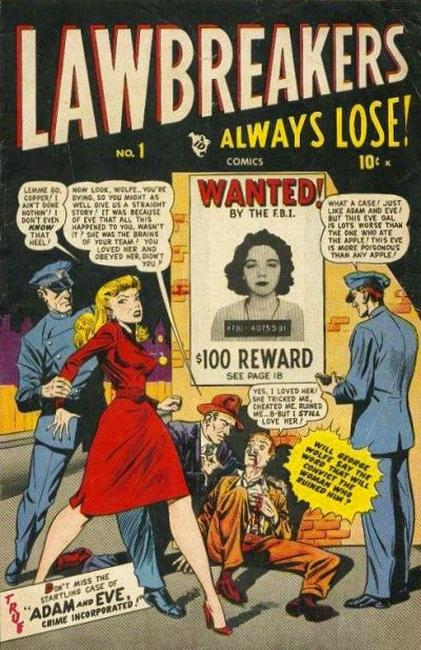

Lawbreakers Always Lose!

Series: 10 issues 1948-1949
Publisher: Atlas (Marvel)
Written by Harvey Kurtzman
Illustrations by Syd Shores, Gene Colan
Short crime stories. Stories in issue #1 include, "Adam and Eve-Crime Incorporated!", "Scourge of the West!", "Murder-On Stage!", "The Clue of the Left-Handed Killer!", "Joe Kratz...Killer!"